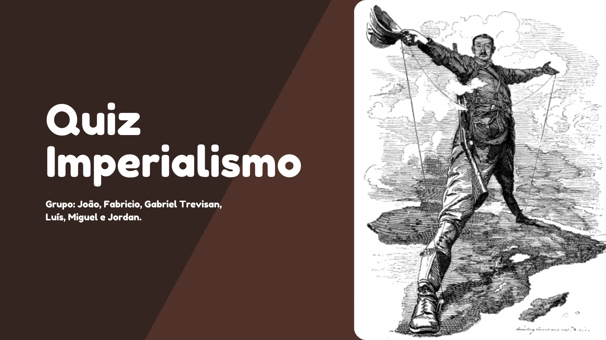

Primeiro Trimestre
Linha do Tempo
Link: Visualizar Canva
Nessa atividade nós deveriamos fazer perguntas sobre
Quiz Imperialismo
Link: Visualizar Canva
Essa atividade tinha como objetivo, criar uma linha do tempo interativa, utilizando ferramentas digitais, com os principais eventos que afetaram a China entre 1839 (1ª Guerra do Ópio) e 1949 (proclamação da República Popular da China)..
